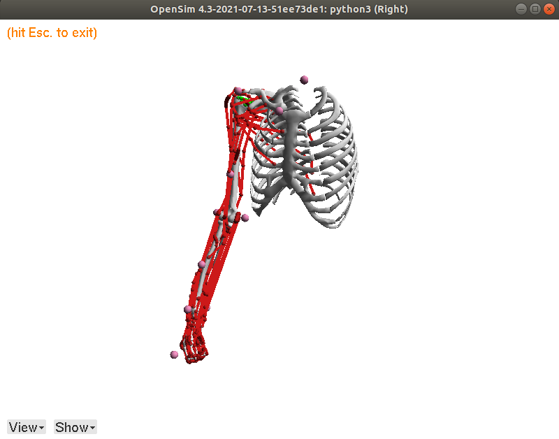
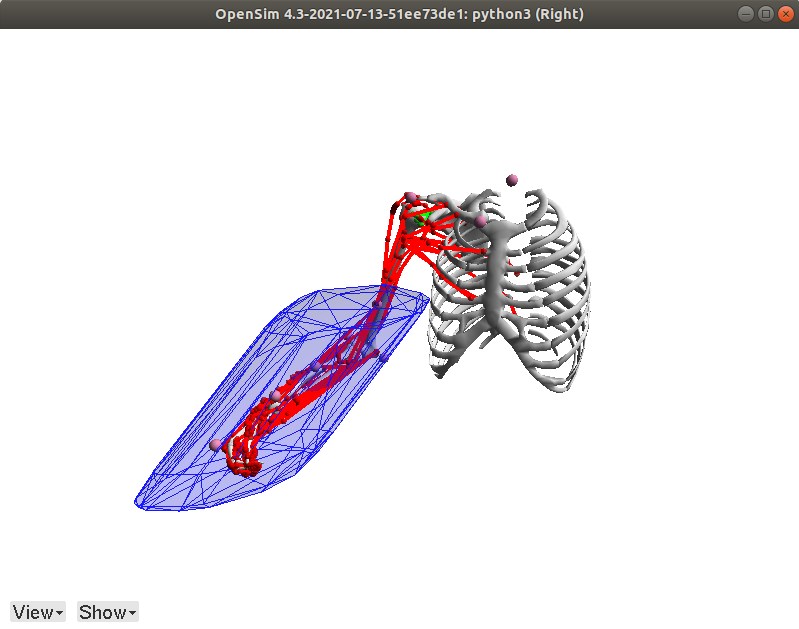

Opensim examples

Installing opensim
To install opensim follow the tutorial at their official github page link.
We suggest to use the anaconda version of the opensim link
Library of opensim models
You will be able to use aany .osim model for the pycapacity package calculations, but to jump-start the development we suggest you to download our small model database on the link. Either download it directly using zip download on the same link or using terminal:
git clone https://gitlab.inria.fr/auctus-team/components/modelisation/humanmodels/opensim_models.git
Opensim exmple project
If you wanna jump start the polytope calculation using pycapacity and OpenSim, we’ve prepared a simple gitlab repo that you can clone and calculate some polytopes right away :
Here is the link.
Visualise models code example
A simple example to test that everything is installed well. You should be able to visualise different models by uncommenting different lines of this example.
import opensim as osim
## uncomment for different models
# one arm
# model_path = './opensim_models/upper_body/unimanual/Holzbaur-Stanford-UpperExtremityModel/Stanford VA upper limb model_0.osim'
model_path = './opensim_models/upper_body/unimanual/MoBL-ARMS Upper Extremity Model/MOBL_ARMS_fixed_41.osim'
# model_path = './opensim_models/upper_body/unimanual/arm26.osim'
# model_path = './opensim_models/upper_body/unimanual/OSarm412.osim'
# model_path = './opensim_models/upper_body/unimanual/Wu_Shoulder_Model.osim'
# both arms
# model_path = './opensim_models/upper_body/bimanual/MoBL_ARMS_bimanual_6_2_21.osim'
# model_path = './opensim_models/upper_body/bimanual/full_upper_body_marks.osim'
# full body
# model_path = './opensim_models/full_body/gait2392_simbody.osim'
# lower bodyy
# model_path = './opensim_models/lower_body/leg6dof9musc.osim'
## Constructor of the OsimModel class.
model = osim.Model(model_path)
viz = osim.VisualizerUtilities()
viz.showModel(model)

Code example
# include the pyosim module
from utils import getStationJacobian, getMomentArmMatrix, getQIndicesOfClampedCoord, getMuscleTensions, getBodyPosition, setCoordinateValues
# include opensim package
import opensim as osim
# pycappacity for polytope calculationreate
from pycapacity.human import force_polytope
# some utils
import numpy as np
import time
## Constructor of the OsimModel class.
model = osim.Model("opensim_models/upper_body/unimanual/MoBL-ARMS Upper Extremity Model/MOBL_ARMS_fixed_41.osim")
endEffectorBody = 'hand'
state = model.initSystem()
joint_pos = [0,0.5,0,1.3,0,1.0,0]
setCoordinateValues(model,state,joint_pos)
start = time.time()
coordNames, coordIds = getQIndicesOfClampedCoord(model, state)
model.equilibrateMuscles(state)
J = getStationJacobian(model, state, endEffectorBody, osim.Vec3(0), coordIds)
N = getMomentArmMatrix(model, state, coordNames=coordNames)
F_min, F_max = getMuscleTensions(model, state)
print("time", time.time() - start)
# polytope calculation
start = time.time()
f_poly = force_polytope(J, N, F_min, F_max, 0.01)
print("time", time.time() - start)
# create the polytope
import trimesh
# find hand position
hand_orientation, hand_position = getBodyPosition(model,state, endEffectorBody)
# save the mesh to disk
mesh = trimesh.Trimesh(vertices=(f_poly.vertices.T/2000 + hand_position.reshape((3,))) ,
faces=f_poly.face_indices, use_embree=True, validate=True)
# save polytope as stl file
f = open("polytope.stl", "wb")
f.write(trimesh.exchange.stl.export_stl(mesh))
f.close()
# adding polytope faces
mesh = osim.Mesh("./polytope.stl")
model.get_ground().attachGeometry(mesh)
mesh.setColor(osim.Vec3(0.1,0.1,1))
mesh.setOpacity(0.3)
# adding polytope vireframe
mesh = osim.Mesh("./polytope.stl")
model.get_ground().attachGeometry(mesh)
mesh.setColor(osim.Vec3(0.1,0.1,1))
mesh.setRepresentation(2)
# visualise the model and polytope
model.setUseVisualizer(True)
state = model.initSystem()
mviz = model.getVisualizer()
setCoordinateValues(model,state,joint_pos)
mviz.show(state)
